About the group
CHIRP (CHIRP-BSU) is the photonics and photonic integrated circuits (PICs) research group at Bridgewater State University (BSU), led by Dr. Samuel Serna Otálvaro and focused on nonlinear and integrated photonics. Our work spans the design, fabrication, and characterization of nonlinear photonic devices — from material-level nonlinear susceptibilities, through nanofabrication, to hybrid device architectures for telecom and mid-IR functionality on silicon and chalcogenide platforms.
The group grew out of Dr. Serna's doctoral and postdoctoral work at the Centre for Nanoscience and Nanotechnology (C2N, Université Paris-Saclay) and at MIT, where he developed and characterized nonlinear silicon and hybrid photonic devices. CHIRP continues that international collaboration — with C2N in Paris (Dr. Laurent Vivien's group), MIT (Prof. Juejun Hu's group), AIM Photonics, and partner universities in Colombia — and welcomes students and researchers interested in combining experimental, theoretical, and computational approaches to integrated optics.
- Principal Investigator Dr. Samuel Serna Otálvaro
- Title Assistant Professor of Physics, Photonics and Optical Engineering
- Institution Bridgewater State University
- Location Mohler-Faria Science and Mathematics Center, Room 225
- Phone 508.531.2040
- Email ssernaotalvaro@bridgew.edu
Focus areas
What we work on
Integrated photonics, nonlinear optics, optical materials, ultrafast optics, nanofabrication, and photonic crystals — connected threads that take a photonic circuit from concept to fabricated chip.
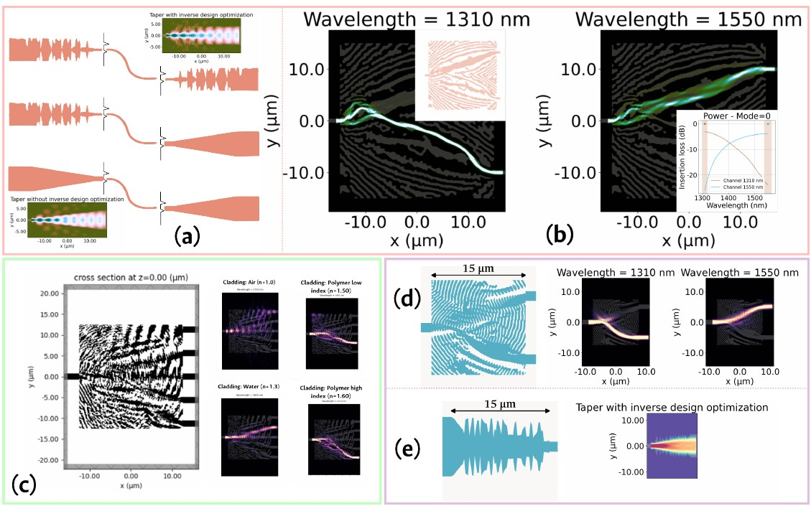
Inverse Design
Gradient-based inverse-design methodologies for optimizing nonlinear photonic structures beyond what intuition-driven design can reach.
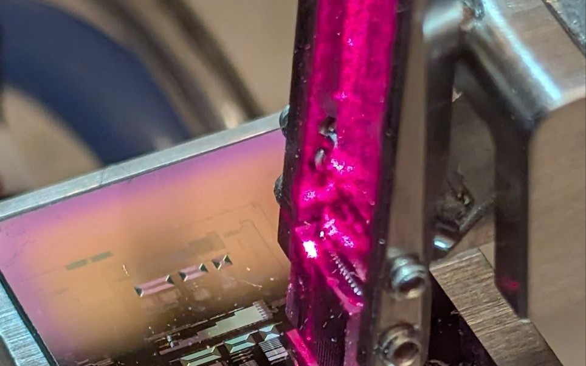
Nonlinear Photonic Circuits
Devices exploiting nonlinear material platforms (e.g. SiN, GeSbS) for next-generation on-chip photonic functionality.

Foundry Tape-outs
Fabrication-ready layouts submitted to foundry partners, including collaborations with AIM Photonics on 220 nm SiN platforms and nanofabrication work with C2N, Université Paris-Saclay.
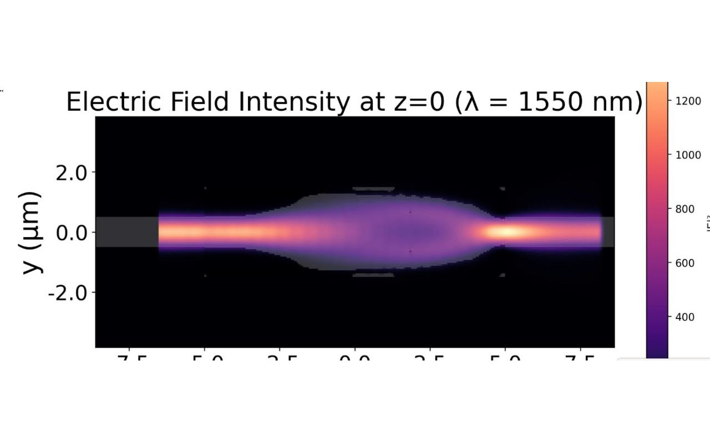
Simulation Frameworks
Custom Python tooling and full-wave EM simulation (Tidy3D, Lumerical, Meep) spanning 2D rapid prototyping to high-fidelity 3D models.
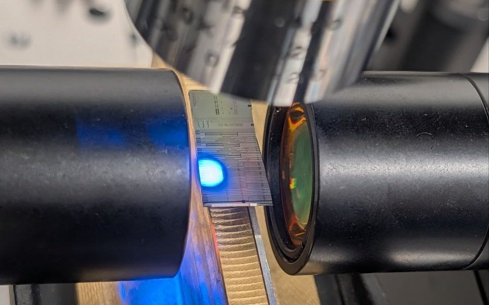
PIC Characterization
Fiber- and free-space-coupled optical testing of fabricated chips — coupling loss, spectral response, and device performance measured directly on the bench.
Ongoing work
Projects & collaborations
Active projects and institutional partnerships the group is currently engaged in.
Chalcogenide Hybrid Nonlinear Photonics
OngoingC2N, Université Paris-Saclay (Dr. Laurent Vivien) · MIT (Prof. Juejun Hu)
International collaboration developing chalcogenide hybrid waveguides for nonlinear integrated photonic applications, connecting nanofabrication expertise at C2N with device design and testing across BSU and MIT.
FOTON-IA
2026 proposalG8+ / Corporación Ruta N (Medellín) · Universidad de Medellín, UNAL, ITM, Universidad de Antioquia · BSU/MIT · ANITI (France)
Proposal to Ruta N's fourth joint G8+ call for district CTeI funding: a socio-technical platform for real-time monitoring of wastewater energy valorization in the Valle de Aburrá, combining hybrid electronic-photonic sensing with AI-driven early-warning analysis. CHIRP's role, alongside MIT, is providing PIC fabrication lab access and personnel for the sensor hardware; UNAL leads PIC sensor design/fabrication and bio-electrochemistry.
The group
People
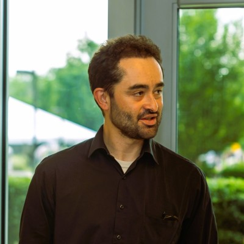
Dr. Samuel Serna Otálvaro
Principal Investigator
PhD, Université Paris-Saclay (C2N); postdoc at MIT. Integrated photonics, nonlinear optics, optical materials, ultrafast optics, nanofabrication, and photonic crystals.
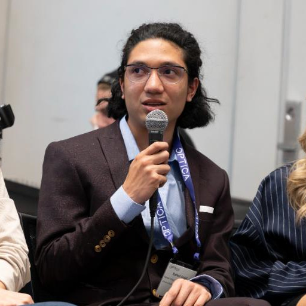
Rafael Ángel Casalins Hernández
Graduate Researcher
Inverse design & layout automation for nonlinear photonic circuits
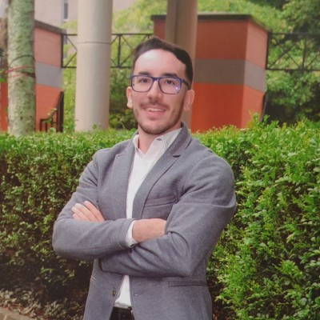
Samuel Huertas Rojas
Graduate Researcher
Photonic crystals
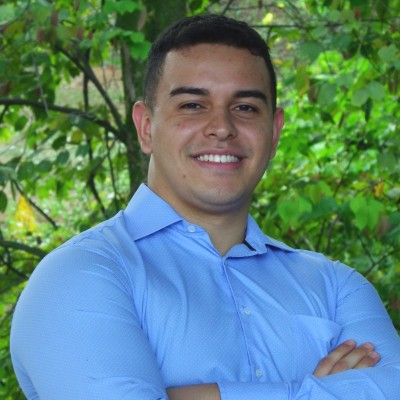
Juan Esteban Rodríguez Ochoa
Graduate Researcher
Sensing with photonic integrated circuits (PICs)
Alumni
Camilo Hurtado Ballesteros
Alumni
PIC characterization for nonlinear devices
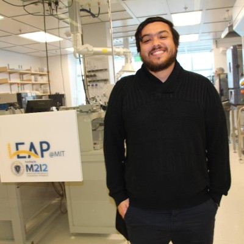
Pablo Bedoya Ríos
Alumni
PIC characterization for nonlinear devices
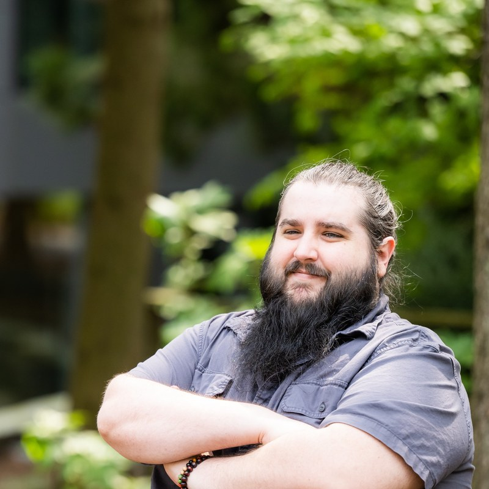
Samuel Alexander Bechtold
Alumni
Nonlinear optics, supercontinuum generation & entangled-photon PIC design
Group publications
Papers & proceedings
Peer-reviewed and conference work from CHIRP members and collaborators.
Inverse Design for SiN and GeSbS
Rafael A. Casalins-Hernández et al. — Frontiers in Optics + Laser Science (FiO, LS), JTu4A.12
Study on Quantum Entanglement Generation in GeSbS Chalcogenide Glass
Pablo Bedoya-Ríos, Camilo Hurtado, Rafael Casalins, Samuel Bechtold, Katherine Stoll, and Samuel Serna — Optica Quantum 2.0 Conference and Exhibition, QTh2A.5
Packaging: Fully Integrated Sensor Devices
In Integrated Photonics for Sensing Applications, eds. A. Agarwal, B. Miller, J. Hu — Elsevier
Updates
News
- Aug 2026 Camilo Hurtado Ballesteros defended his Master's thesis in Physics, "Study of nonlinear phenomena in integrated platforms for near-infrared and mid-infrared," at Universidad Nacional de Colombia – Sede Medellín, co-directed by Dr. Samuel Serna Otálvaro and Prof. Román Eduardo Castañeda.
Lab life
Gallery
Snapshots from group meetings, conferences, lab dinners, and other CHIRP moments.
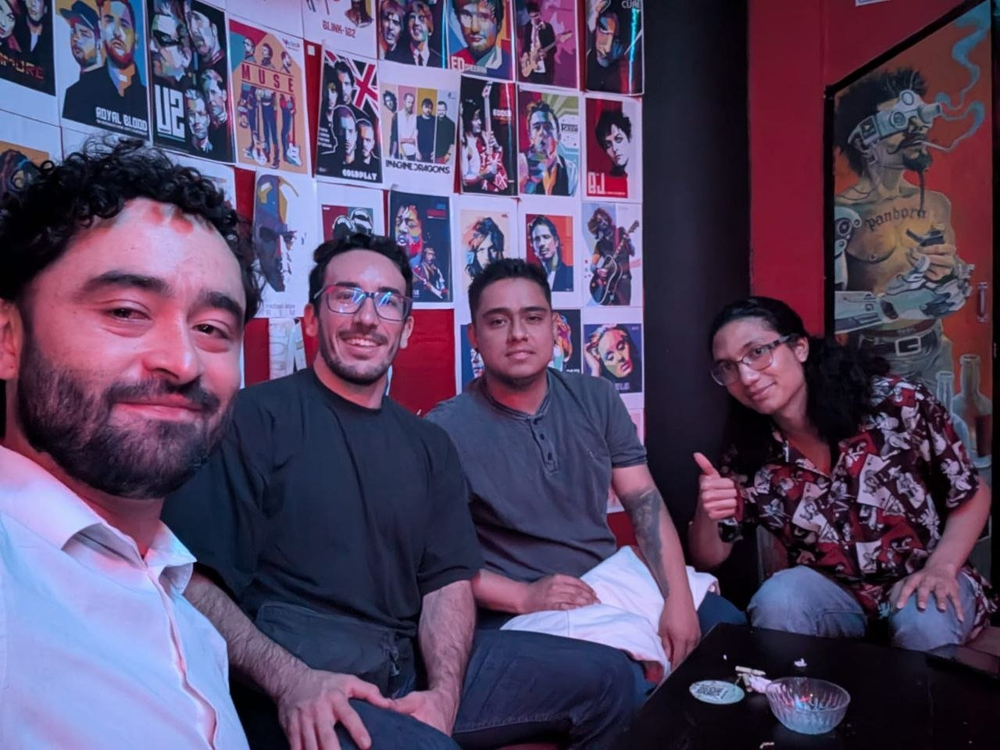
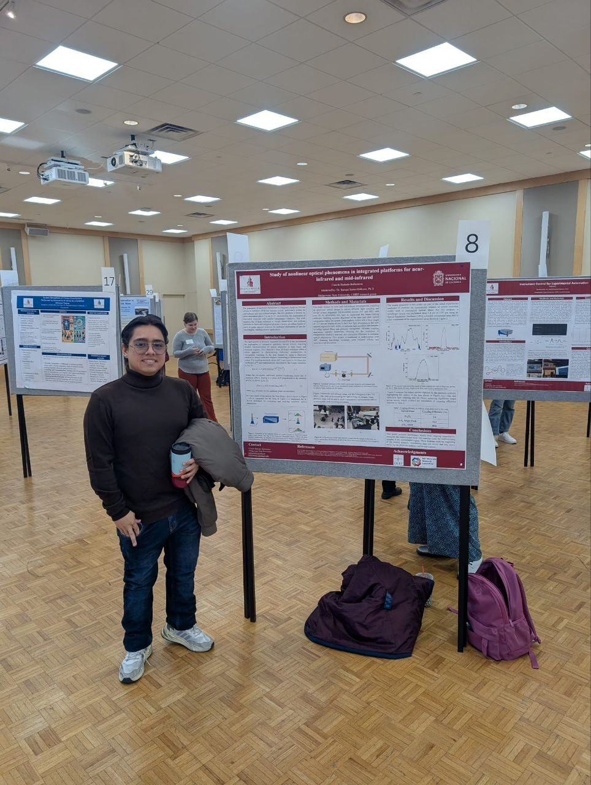
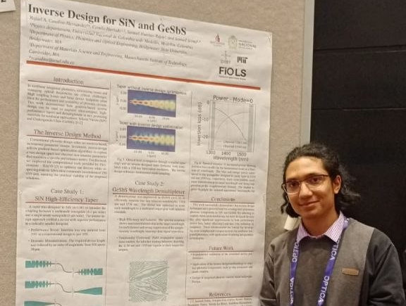
Get in touch
Contact
We're open to research collaborations and welcome inquiries from prospective graduate students interested in integrated photonics. Reach out directly or use the form.
- Email chirp.lab@bridgew.edu
- Institution Bridgewater State University
- Address [Department, Building, Bridgewater, MA]
- GitHub github.com/CHIRP-BSU